מהו המצג האופייני?
כאבים בכתף ובזרוע המופיעים באופן הדרגתי.
הכאבים יכולים גם להיות תוצאה של חבלה או נפילה על הכתף, ואז הסימפטומים מופיעים בצורה חדה
וחזקה (ראה פרק קרע טראומטי של שרוול מסובב).
הכאב מופיע במיוחד:
- בזמן הרמה של היד
- בתנועות סיבוב (בעיקר לאחור)
- בתנועות של זריקה
- ובשינה
הכאבים נמשכים לאורך זמן, ושכיח שיש הטבה זמנית בלבד לאחר הזרקות או טיפולים נגד כאבים.
הכאב מלווה:
- בקושי בתפקוד עם היד
- ולעיתים חולשה משמעותית בכתף
- עיקר בפעילות עם היד מורמת
מה זה קרע של השרוול המסובב?
שרירי השרוול המסובב אחראים על שמירת ראש הזרוע במקומו ועל תנועות סיבוב של הכתף.
בנוסף, שרירים אלו אחראים גם לתנועות סיבוב של הכתף, ובעיקר הסיבוב החיצוני של היד.
השרירים מתחברים לעצם הזרוע דרך גידים בצורה של רצועה רחבה.
קרע משמעו לרוב תלישה של הגיד מהמקום שבו הוא מחובר לעצם, ולא קריעה של הגיד עצמו.
במקרים רבים, למרות שקיים אירוע של חבלה, הגיד נחלש משחיקה כרונית, ובעקבות האירוע נוצר קרע
משמעותי יותר.
מהם סוגי הקרעים?
1. קרע חלקי
קרע בעובי חלקי משמעו קרע המערב רק חלק מעובי הגיד.
הגיד עדיין רציף, אך שחוק מצד אחד וחלק מהסיבים קרועים.
קרעים חלקיים הם לרוב קטנים וגורמים בעיקר לכאב.
2. קרע מלא
בקרע בעובי מלא קיים למעשה חור של ממש בגיד לכל עובי הסיבים (חור שלם בגיד מצד לצד).
ייתכן שמצדי הקרע קיים רצף של הגיד, אך במיקום של הקרע הסיבים קרועים לכל עובי הגיד.
קרע מלא יכול להיות קטן ואז הוא מתנהג כמו קרע חלקי, דהיינו:
- התפקוד שמור ברובו
- ויש בעיקר כאבים
ככל שהקרע גדול יותר ברוחב ובאורך, הפגיעה בתפקוד ובכוח של הכתף משמעותית יותר.
3. קרע מסיבי
קרע גדול מאוד, לעיתים מערב מספר גידים, עם ניתוק שלם של הגידים.
במקרים אלו הגיד נמשך לאחור על ידי השריר.
קרע מסיבי לרוב מביא:
- להגבלה קשה מאוד בתפקוד של הכתף
- ולעיתים דווקא לכאבים פחותים
טיפול בקרעים מסיביים קשה יותר והשיקום ממושך יותר.
כיצד מאבחנים קרע של השרוול המסובב?
האבחנה מתחילה לפי התלונות והבדיקה הגופנית.
הדמיות נדרשות:
- אולטרסאונד או MRI – אלו הבדיקות העיקריות.
- כדי שנוכל להעריך את גודל הקרע בצורה טובה יותר ולהתרשם מאיכות השרירים עצמם, האם יש ניוון שומני או לא, יש צורך בבדיקת MRI.
- בחלק מהקרעים הקטנים יותר ניתן להסתפק בבדיקת US לצורך האבחון.
חלק חשוב מהבירור הראשוני הוא צילום רנטגן, שמטרתו לזהות בעיות נלוות בעצמות ובמפרקי הכתף, כגון:
- שחיקת סחוס במפרק הכתף
- שחיקת סחוס במפרק האקרומיו־קלויקולרי (AC joint)
לא ניתן לאבחן קרע של השרוול המסובב על סמך צילום רנטגן.
מהו הטיפול במצב של קרע טראומטי של השרוול המסובב?
קרעי השרוול המסובב לא מחלימים לבד, אלא רק על ידי תיקון ניתוחי של הקרע.
עם זאת, יש הרבה אנשים שחיים ומתפקדים באופן מלא למרות שקיים קרע, כך שעצם המצאות הקרע לא
מחייבת ניתוח.
במקרים מסוימים ניתן, בעזרת טיפול פזיותרפי, להשיג:
- שיפור בתפקוד הכתף
- הפחתה בכאב
- וחזרה לפעילות
זאת למרות שעדיין קיים קרע.
התהליך אפשרי על ידי חיזוק של השרירים הקיימים כך שהם לוקחים את תפקיד הגיד הקרוע (ראה
פרוטוקול תרגילים לחיזוק השרירים).
במקרים כאלה רצוי לעקוב אחר הקרע כדי לוודא שאינו מחמיר עם הזמן.
לצורך תיקון הגיד הקרוע יש צורך בהתערבות ניתוחית.
הניתוח יכול להתבצע בגישה פתוחה או ארתרוסקופית. כיום מקובל לבצע את הניתוח בצורה
ארתרוסקופית (ראה פרק ניתוח ארתרוסקופי לתיקון קרע בשרוול המסובב).
במהלך הניתוח מבוצע תיקון של הגיד על ידי תפירתו חזרה לעצם של הכתף ממנו הוא נקרע.
לאחר הניתוח יש תקופת שיקום הנמשכת מספר חודשים ודורשת:
- שיתוף פעולה של המטופל
- וביצוע פיזיותרפיה יומיומית
יש לצפות לכאבים בעיקר בשבועיים הראשונים, אולם הכאב לפעמים מתמשך לאורך זמן, אפילו חודשים.
יש מצבים בהם לא ניתן לבצע תיקון, וגם אם יבוצע הסיכוי לקרע חוזר גבוה.
מדובר במקרים בהם:
- הקרע גדול מדי
- או שאיכות השרירים עצמם גרועה, בשל חוסר שימוש ממושך
במקרים הללו, בעיקר כשמדובר באנשים מבוגרים (אין קביעה חד־משמעית אבל בטח מעל לגיל 70), ניתן
לבצע ניתוח החלפת המפרק עם משתל מיוחד מסוג כתף הפוכה.
מדובר במשתל במבנה מיוחד שתוכנן למצב הזה ומאפשר את תפקוד הכתף למרות הקרע בגידים (ראה פרק
על החלפת מפרק עם משתל מסוג כתף הפוכה).
יש לזכור
טיפול שמרני / לא ניתוחי אינו מרפא את הקרע: לא תרופות, לא פיזיותרפיה, לא הזרקות ולא
טיפולים במסגרת רפואה משלימה.
מה סיכויי ההצלחה של ניתוח לתיקון הגידים?
סיכויי ההצלחה תלויים בגורמים רבים, כולל:
גודל הקרע, הזמן שחלף מהופעת הקרע עד לתיקון, גיל המטופל, בריאותו הכללית, איכות העצם
והגידים, טווח התנועה של הכתף לפני הניתוח, רמת הפעילות לפני הפגיעה, ומידת המוטיבציה של
המטופל.
ככל שמדובר בקרע קטן יותר, הזמן מהפציעה קצר, המטופל צעיר יחסית ובעל מוטיבציה גבוהה – סיכויי ההצלחה גבוהים מאוד.
לצורך הערכה מדויקת יש להתייעץ עם הרופא המטפל.
מה יכול לקרות אם לא מבצעים ניתוח?
הקרע לא יחלים וממשיך להחמיר עם הזמן.
ככל שהקרע גדול יותר, כך גם הסיכוי:
- להמשך החמרה בגודל הקרע
- ולפגיעה בתפקוד
יש לקחת בחשבון שבקרעים גדולים ואלו שמלווים בהגבלה בתנועות, ככל שנדחה את הניתוח:
- סיכויי ההצלחה של הניתוח יורדים
- השיקום יהיה קשה יותר
- והתוצאה התפקודית בסוף התהליך תהיה פחות טובה
מצד שני, אם הקרע חלקי או קטן והתפקוד של הכתף שמור, ניתן לדחות את הטיפול הניתוחי ולנסות טיפול בפיזיותרפיה.
לסיכום
כאשר מדובר בקרע קטן יחסית או חלקי, תנועות הכתף טובות ואין פגיעה משמעותית באיכות החיים,
אזי ההעדפה שלי היא טיפול שמרני שעיקרו פיזיותרפיה.
אם לא חלה הטבה, או שיש החמרה ופגיעה בתפקוד ו/או באיכות החיים – יש מקום לטיפול ניתוחי.
במצב של קרעים גדולים, ובעיקר עם פגיעה תפקודית כגון:
- הגבלה בתנועות
- חוסר יכולת להרמה מעל לגובה הכתף
- קושי בשינה
- ובעיקר אם כבר היה ניסיון לטיפול במסגרת פיזיותרפיה
ההמלצה שלי היא לבצע תיקון ניתוחי של הקרע, וטוב מוקדם ממאוחר.
במצב של קרע מסיבי שאינו ניתן לתיקון, יש לדון בהתאם למצב התפקודי הקיים ומידת הכאבים
באפשרויות השונות, ולפי הצורך להחליט על החלפת מפרק הפוכה.
ההסבר מהווה רקע וסיכום כללי של הנושא, מנקודת המבט המקצועית שלי.
כל מקרה הוא אישי ודורש ייעוץ פרטני ודיון עם הרופא המטפל.
 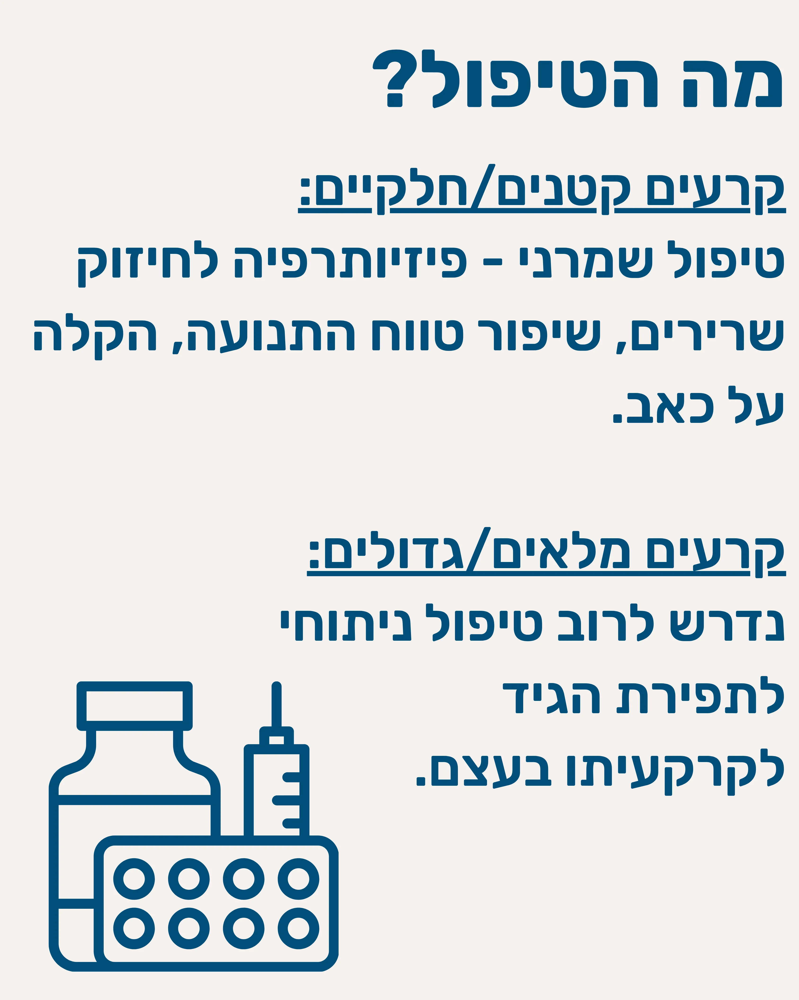
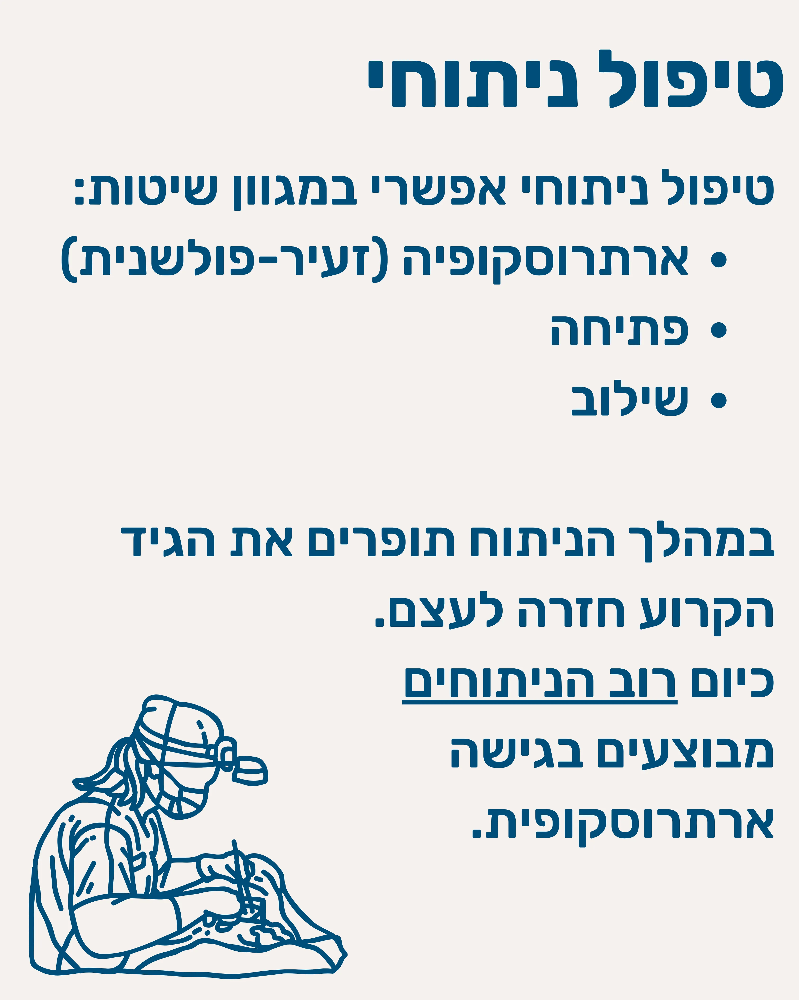
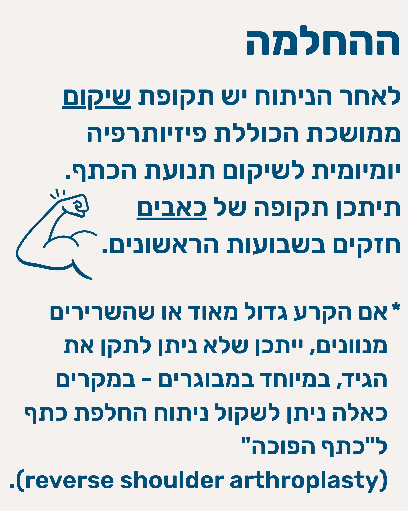
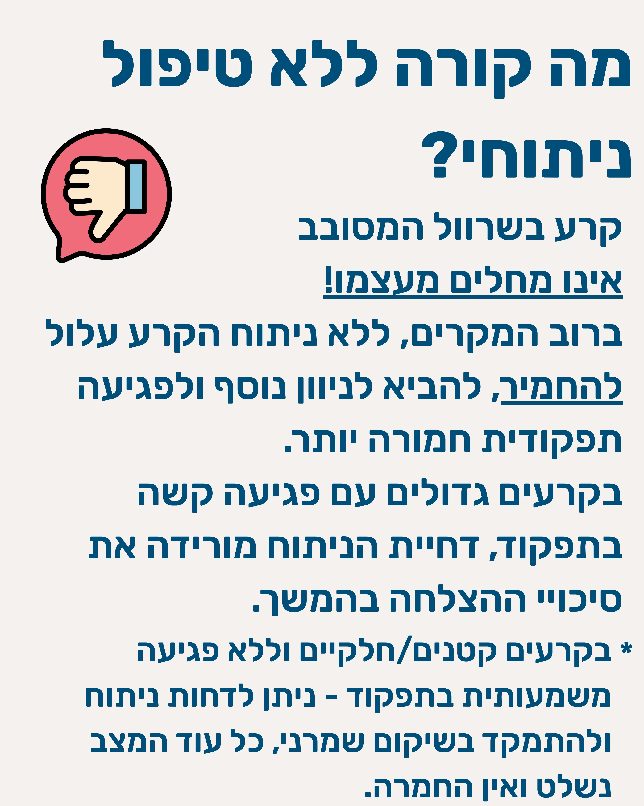
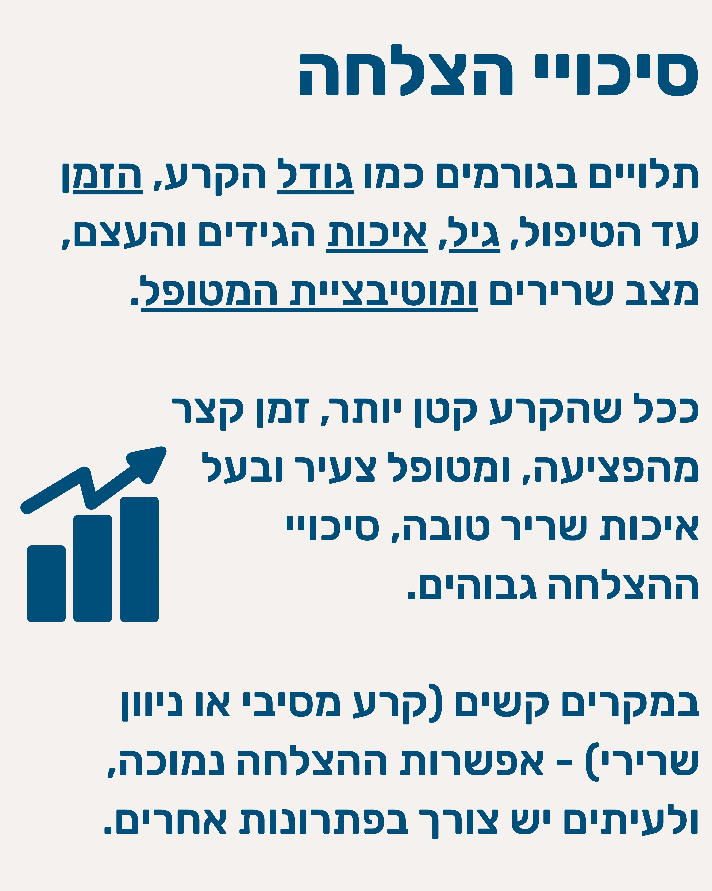
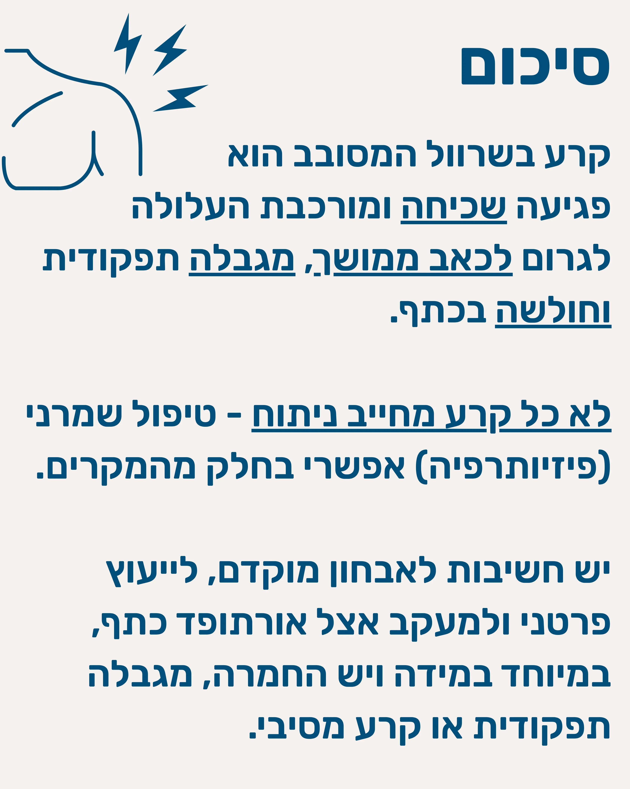
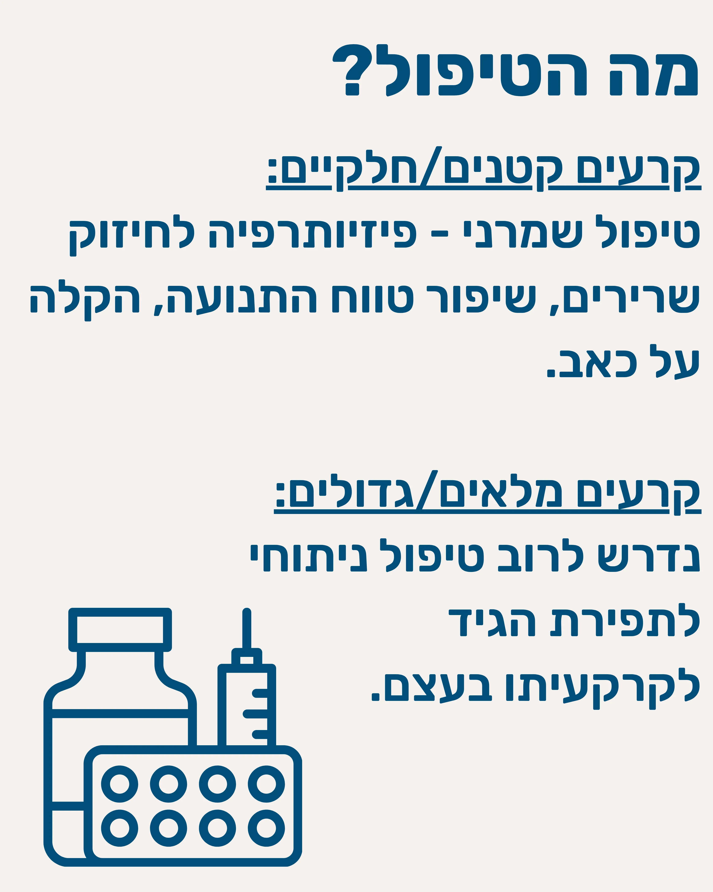
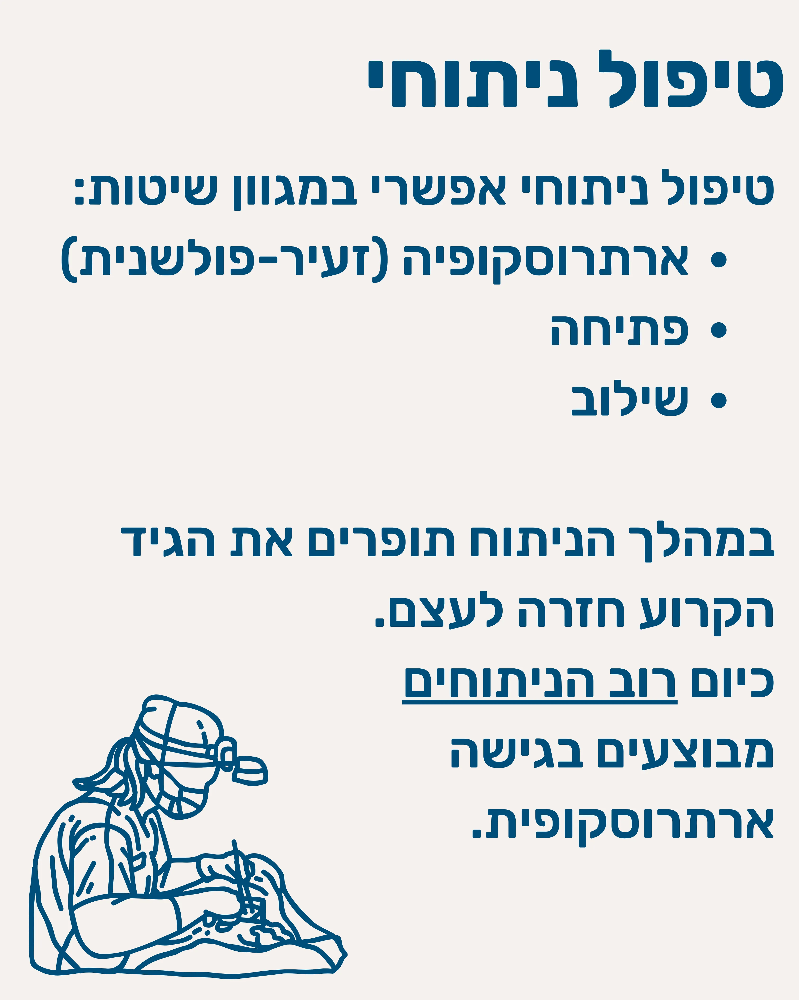
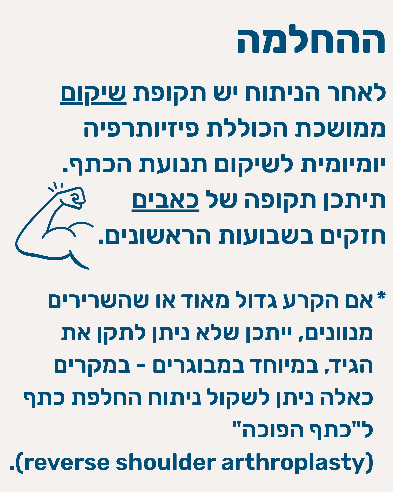
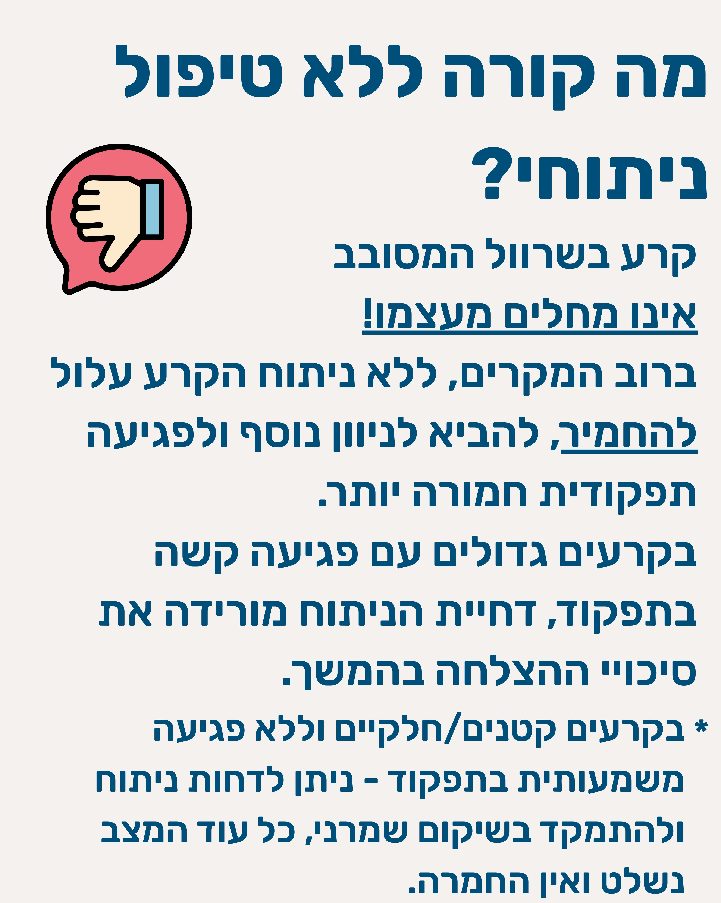
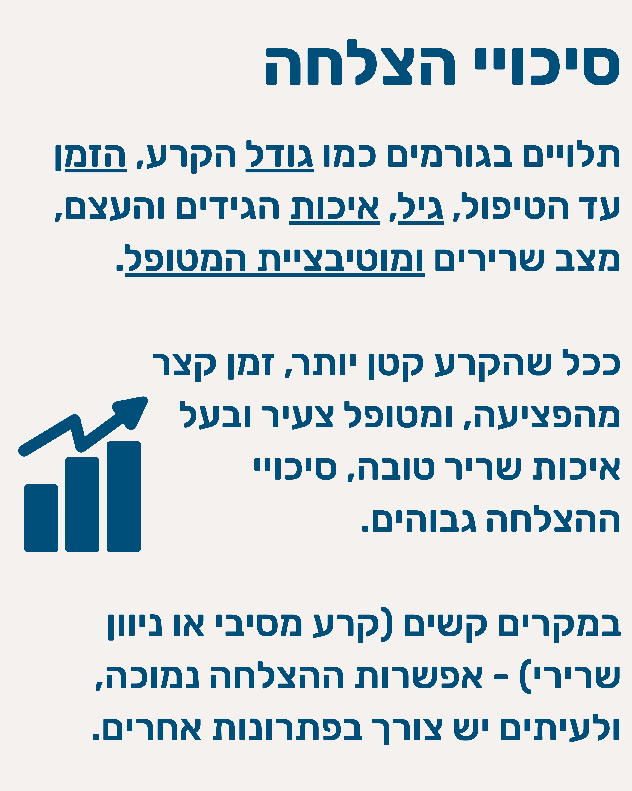
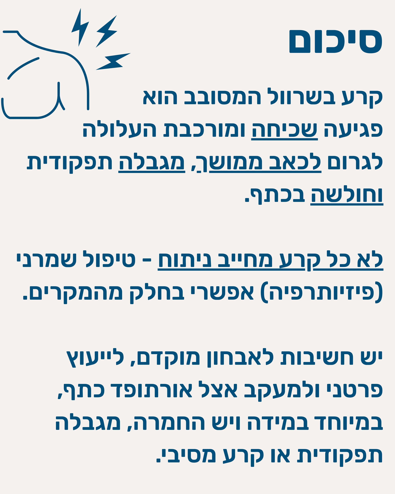